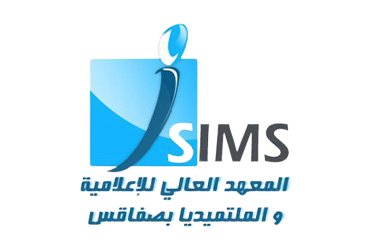

Cycle Preparatoire Integre
Depuis l’année universitaire 2020-2021, le département ingénierie informatique et multimédia intègre un cycle préparatoire intégré. L’objectif des deux années de préparation intégrée au cycle d’ingénieur de l’ISIMS est d’acquérir principalement un socle de connaissances solides, sur lequel s’appuiera ensuite le cycle ingénieur Le programme de ces deux années intègre des cours bien poussés en mathématique, électronique, mais il s’en distingue aussi grâce à des enseignements plus concrets en informatique fondamentale et appliqué aux différents contextes et multimédia. Un cycle préparatoire intégré en science de l'informatique et du multimédia dure 2 ans au cours duquel un seul redoublement est permis. L’admission à ce cycle préparatoire intégré se fait par l’orientation de nouveaux bacheliers.
L’objectif des deux années de préparation intégrée au cycle d’ingénieur de l’ISIMS est d’acquérir
principalement un socle de connaissances solides, sur lequel s’appuiera ensuite le
cycle ingénieur. Le
programme de ces deux années intègre des cours bien poussés en mathématique, électronique, mais il s’en
distingue aussi grâce à des enseignements plus concrets en informatique fondamentale et appliqué aux
différents contextes et multimédia.
La pratique occupe une place centrale :
les notions
théoriques et leurs
applications détaillées sont expliquées en cours intégrés (CI), puis expérimentées en travaux pratiques (TP)
et lors des mini-projets.
" ...figurez-vous seulement (et tout sera réparé) que vous n'avez fait qu’une somme, pendant que ces visions vous apparaissaient. (...) si nous avons la chance imméritée d'échapper aujourd'hui au sifflet du serpent, nous ferons mieux avant longtemps..." -- Puck, acte V, scène II, Songe d'une nuit d'été, William Shakespeare.
(_) (_) _ ___ _ _ _ ___ | |/ __|| || \ / |/ __| | |\__ \| || |\/| |\__ \ |_||___/|_||_| |_||___/
Si (note < 10) alors Examen_raté()
Sinon Examen_réussi()
Fin si
(a + b)3 = a3 + 3a2b + 3ab2 + b3